Modern
Workflow
& Tooling
🔥 Tasty Tooling Tips
wesbos.com@wesbosI'm
Wes Bos

These slides will be available shortly after this talk
I'll tweet the link out.

 ReactForBeginners.com
ReactForBeginners.com SublimeTextBook.com
SublimeTextBook.com CommandLinePowerUser.com
CommandLinePowerUser.com flexbox.io
flexbox.ioLet's talk about tooling.
First, a story
It's about
the plumbing industry
Traditional
Tools
- Copper Soldering
Uses Blow Torch / Starts Fires
Prone to crack at joints
High level of experience needed - Messy Glues
Time Senstive
Undoable - Compression Fittings
Prone to Leaking
Difficult to Install
Enter Shark Bite
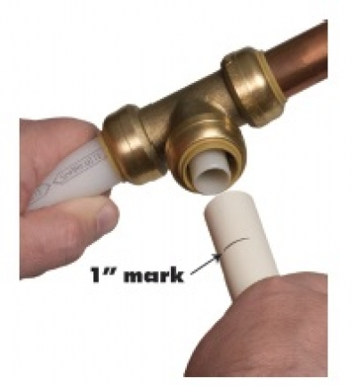SharkBite is a new type of fitting that plumbers can use to attach pipes together
It's Lego for plumbing!
- Snaps together instantly
- Can connect any material to copper
- Can be redone any time
- Much less prone to leaks
Shark Bite is more expensive,
- but -
it allows for faster work
and is much less error prone.
Many Plumbers have written it off.
It's too expensive.
It's too fancy.
It's changing the industry
many are blind to the benefits.
Web tooling is evolving in exactly the same way.
Some developers write tooling off as over-engineering, while others have realized the benefits.
There is a fine line between tooling for tooling's sake and getting real work done.
Let's be smart about the tools we use.
Any time invested in tooling should be paid back by greater efficiency and better, more resilient code.
"There are too many tools!"
"What Should I use?"
"It changes too fast!"
😭
I'm overwhelmed.
[loudly crying]😭 → 😢 → 😑 → 😮 → 😁 → 😄
This talk is going to review popular workflow components.
I hope you can take away 3 or 4 things
to improve your own workflow.
Build Tools
The Biggest Barrier to Entry
Grunt, Gulp, Broccoli, NPM, WebPack
Not all tools are Equal
What are they for?
- Compiling + Converting Styles
- Concatination
- Test Running
- Deployment
- + any task you want automate

Grunt
One task at a time
Gruntfile is Configured
Write to file system

Gulp
Sequential Tasks
Gulpfile is Coded
pipes contents through streams
NPM as a build system
Uses NPM Scripts in your package.json to run a string of bash tasks
Installed node_modules expose commands to package.json like `babel`, `browser-sync` or `uglify`
Instead of using Grunt Uglify or Gulp Autoprefixer, it uses the exposed CLI commands directly.
No special gulp/grunt adapter libs needed - just use the package!
NPM Scripts
- No globally installed modules or clashing version from other projects
- No complex build files
- Useful for small build tasks
- Kicking off servers
- Cleaning Directories
- Starting a webpack build
"So Simple + Easy"😳
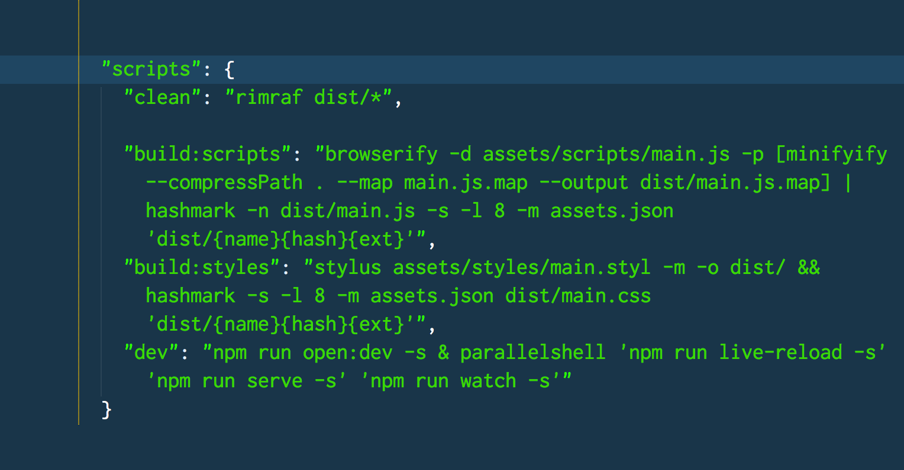Flow control can get tough!
WebPack
- Focused on JavaScript Modules - Gulp meets Browserify
- Comes Batteries Included for many Common Tasks — concatination, module bundling, uglify, sourcemaps...
- Can handle loading CSS on a per-module basis
- Powerful, but hard to learn API
- Popular in JavaScript community - Hot Loading, Dead Code elimination
What Should I use?
Whatever Works Best!
For Websites
Gulp is the good fit because:
Build Speed
Package Availability
Ease of Authoring and Understanding
Overall Industry Acceptance
47% use Gulp while near 20% don't use one at all
For Large JS Apps
Webpack is in very active development
Huge barrier to entry, but huge possible gains!
Having a build tool is most important.
Once you have something in place, we have thousands of packages available to us — let's look at some!
Performance!
Critical●
First Paint is extremely important
Extracts & inlines critical-path (above-the-fold) CSS from HTML
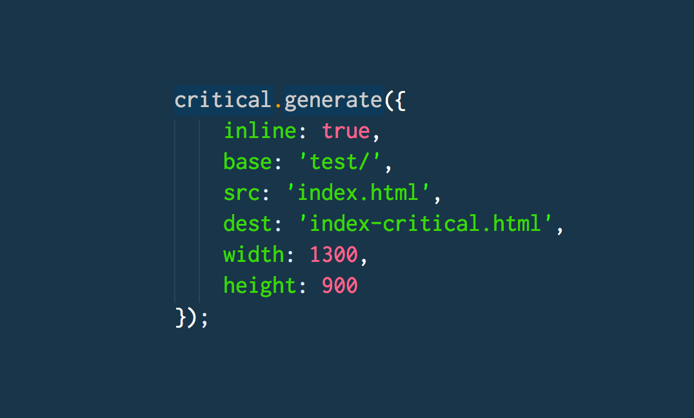Purify●
Removes Unused CSS.
Works with JavaScript Generated classes & Selectors
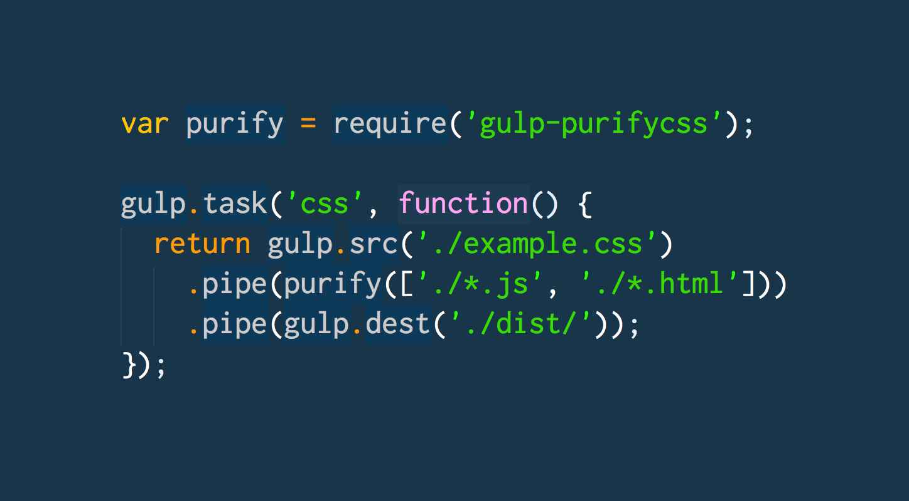ImageMin●
Image Compression is Hard.
Most devs don't care enough to do it.
ImageMin provides a common, easy to use interface for 17 different image compression libraries.
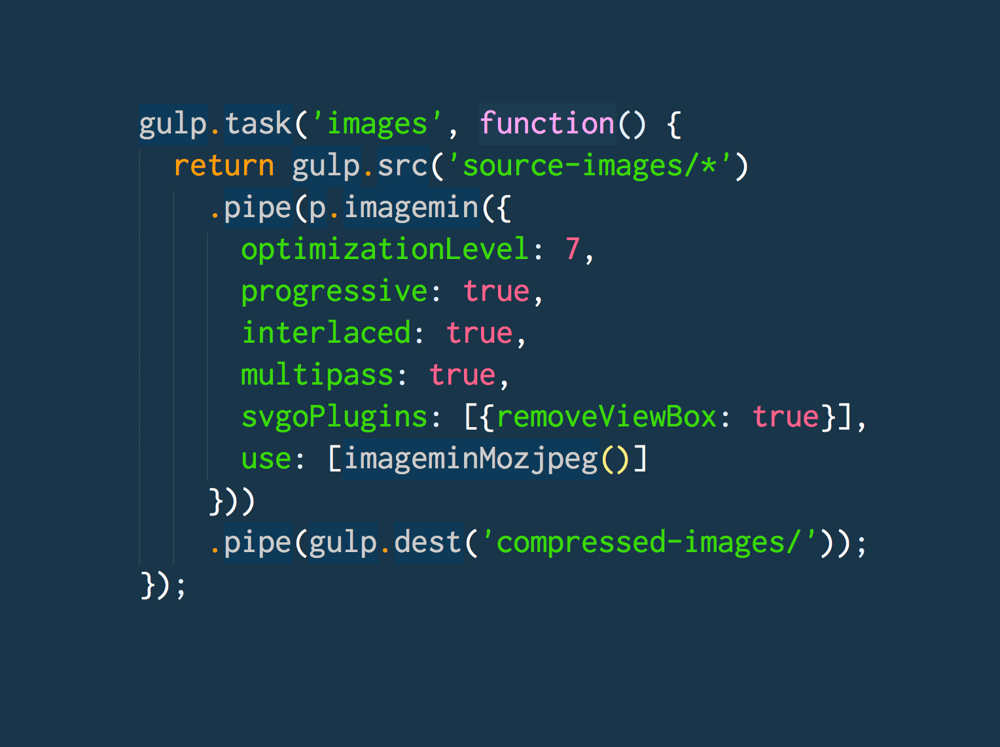Do you have
7.75 seconds?
60.5%!
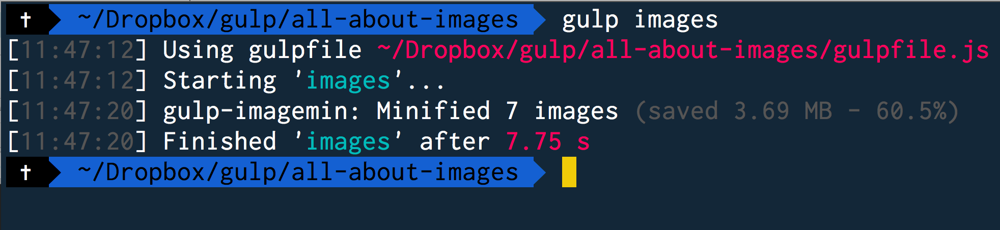UglifyJS●
Minifies, Compresses and Mangles Code
2.3m → 405k with just the defaults
 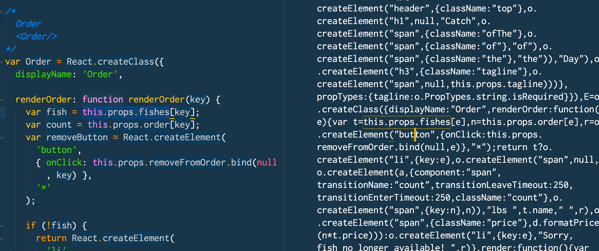
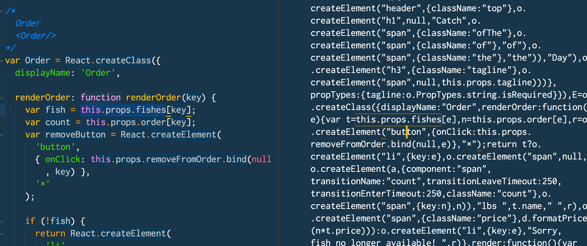Dependency + Module Management
We're seeing a huge shift
in how we manage
front end dependencies
The Old Way:
- Find monolith library we want
- Download from Github
- Unzip
- Move over files to project
- pop in another <script> tag
- Rinse + Repeat
One day you wake up and...
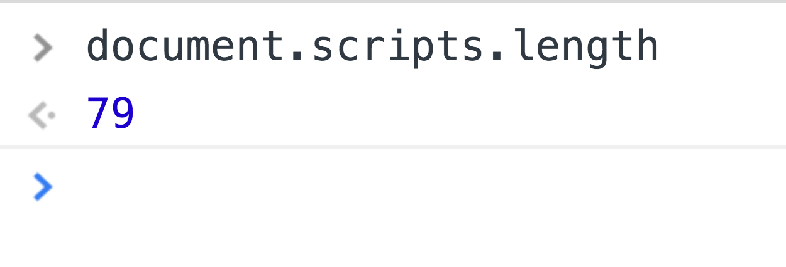Or you have 5 versions of jQuery😂
Or 3 of your plugins are all loading Lodash
The Future is
Modules
We have have modules in Node.js since the beginning, but have seen limited uptake in the browser.
With the rise in popularity of build tools, now is the time to start!
How?
1. Install your libraries:
$ npm install jquery
— or —
$ bower install jquery
— or —
$ jspm install jquery
2. Write your code
Common JS → Node Style
var $ = require('jquery');
ES6 Modules
import $ from 'jquery'
3. Compile into a single or multiple bundles
Browserify → Simpliest API
WebPack → Handles CSS, batteries included, Native ES6 Modules
JSPM → Client Side. Native ES6 Modules
STOP!
What about Gulp? Grunt?
Where do they fit in?
Gulp and Grunt are task runners, one of your tasks will be to bundle your JavaScript.
Gulp and Grunt can call run Browserify, WebPack and JSPM for you, or you can call them directly via NPM Scripts.
Back to Modules
Let's look at some code
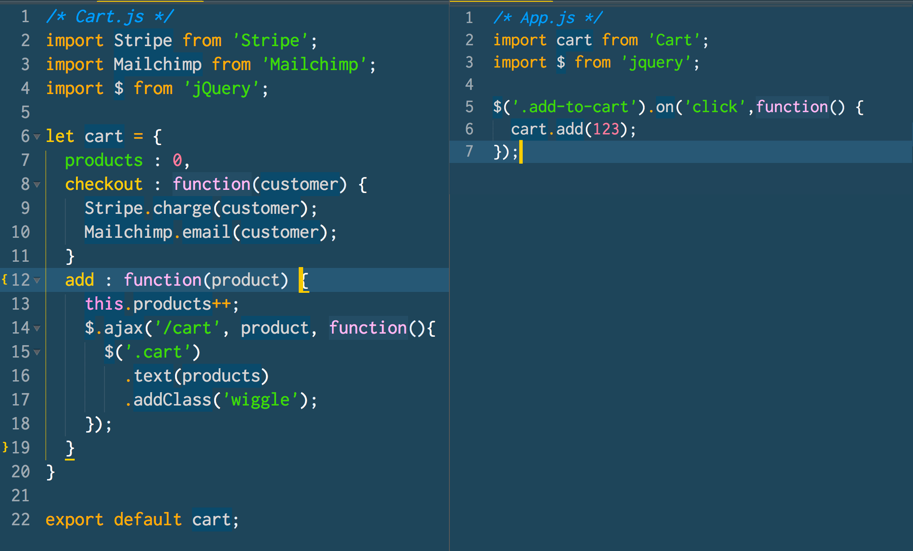Small Modules that
do one thing
and
one thing well.
Only need Ajax?
$npm install fetch
— Then —
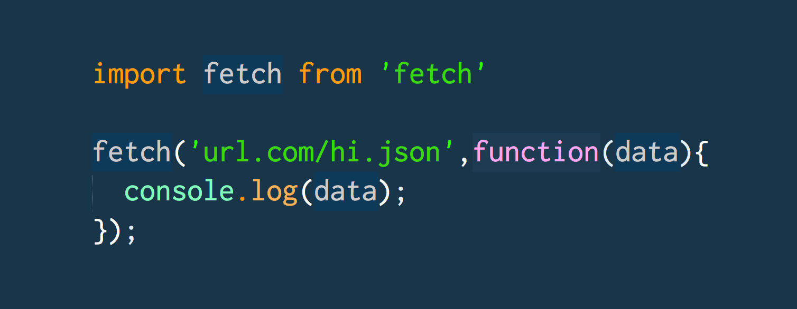Pick + Choose from Lodash
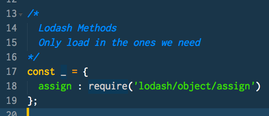NPM,
Bower,
or JSPM?
Registries
When it comes to installing dependencies, there are two registries: NPM and Bower. JSPM uses NPM's registry.
Use NPM for everything!
Even though NPM was initially for Node, it's been expanded to be the Package Manager for everything JavaScript + Front End.
The Future
JavaScript + CSS are evolving a rapid pace. Let's start writing future code today.
Future JavaScript
ES6
ES7
ES-Next
We have all kinds of useful new features
Arrow Functions
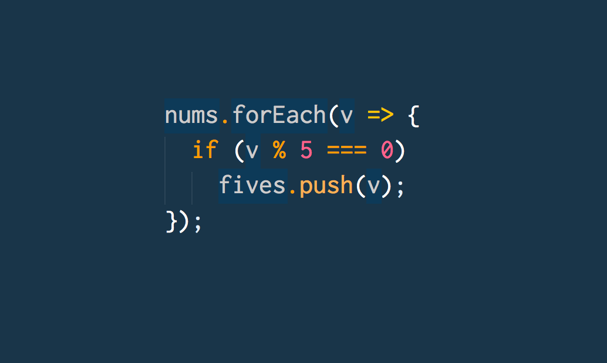let and const variable declarations
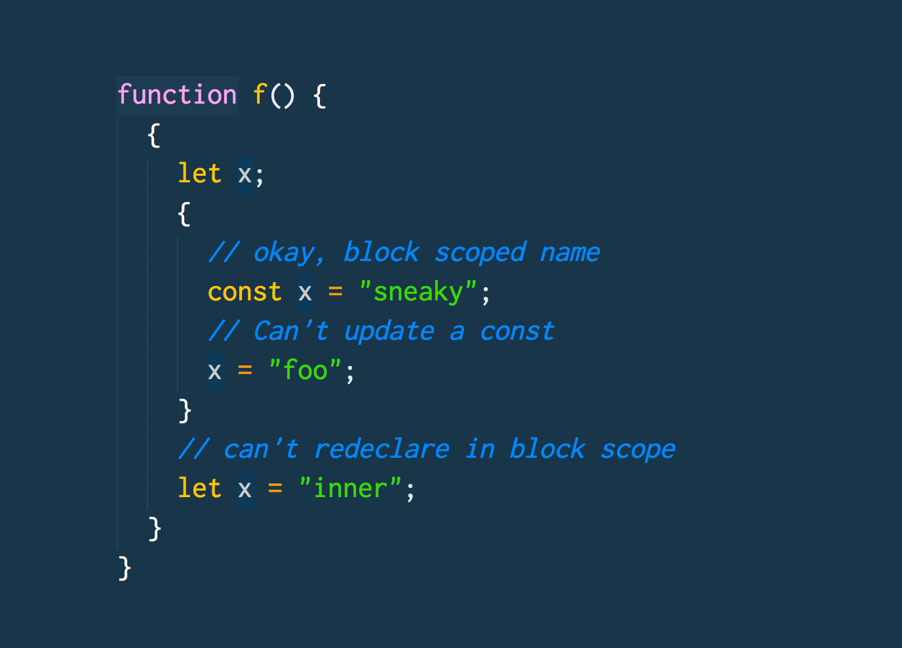Template Strings
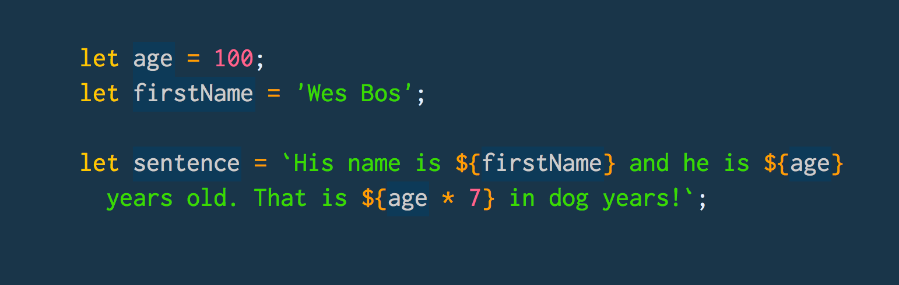+ Many More
These are things we want to use today - and we can!
 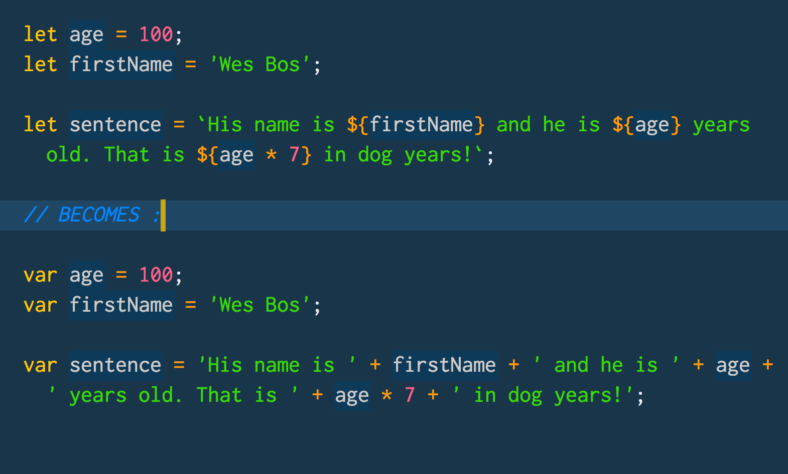
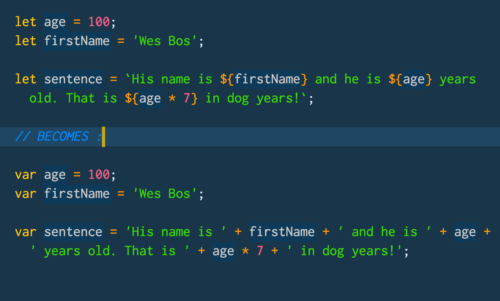Gulp → gulp-babel
Grunt → grunt-babel
Browserify → babelify transformer
WebPack → babel-loader
CLI → babel script.js --out-file script-compiled.js
CSS4
Everyone is
😍😍😍
over Sass
Less & Stylus
But CSS is changing
We're getting the things we like in regular CSS:
Variables, Nesting, Scoping...

Write in CSS4,
compile for current browser support
Start using the new features today

It's Written in JavaScript and compile times are lightning fast

It's part of PostCSS ecosystem
Write your own CSS transformers or grab one of the dozens from NPM (like Autoprefixer!)
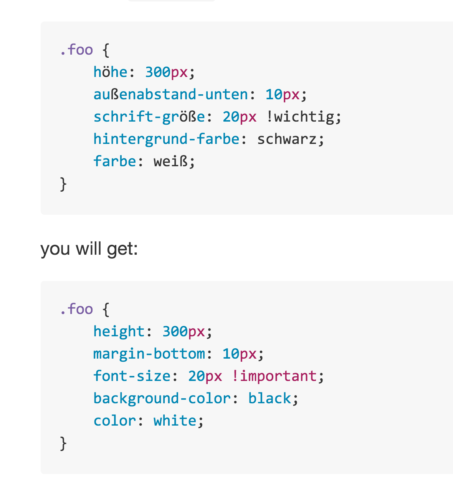 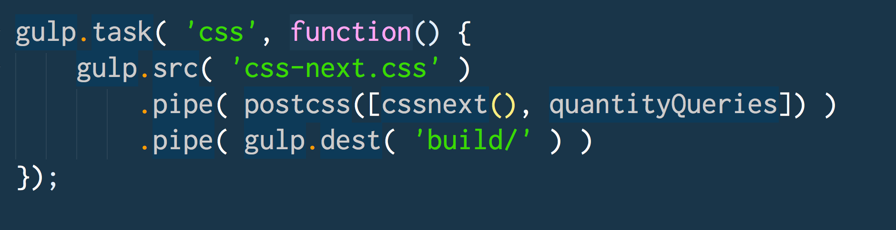
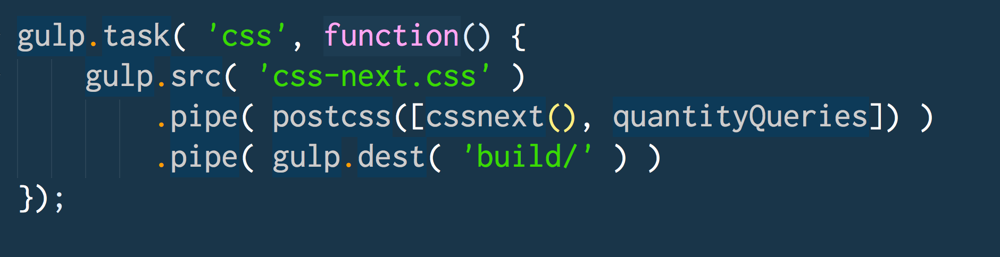Workflow Treats
Small things you should add to your workflow!
BrowserSync
- Instant Reloading after changes are made
- Includes Server with cert for easy local HTTPS
- Proxies existing applications / servers - WordPress, Ruby, Python...
- Exposes server via local IP so you can test on multiple devices
- Syncs clicks, submits and scrolls
- Absolute MAGIC!
Sourcemaps
It's not uncommon for our code to go though several transforms before it hits the browser as regular CSS
Stylus → AutoPrefixer → CSS
ES6 → Babel → Browserify → UglifyJS → JavaScript
What happens when there is an error?
How do we trace it back to the original file?
CSS bug in _typography.scss:10 but browser shows error in compiled and minified app.css
JavaScript error in your React JSX component Store.js:25, but is untraceable after running through Babel and Browserify!
Sourcemaps are
Treasuremaps
for bugs
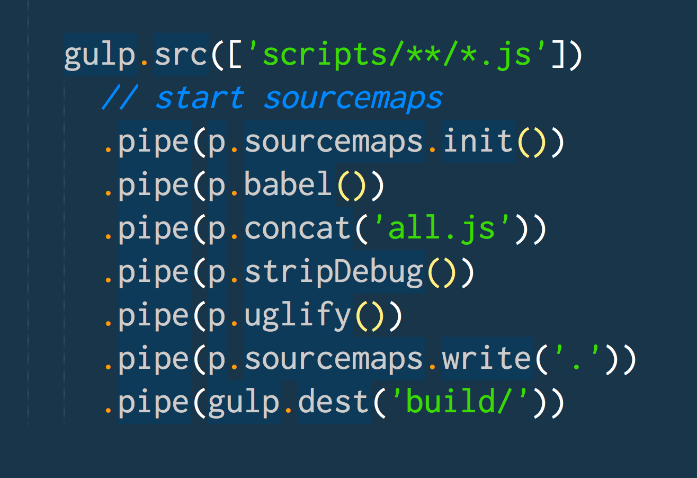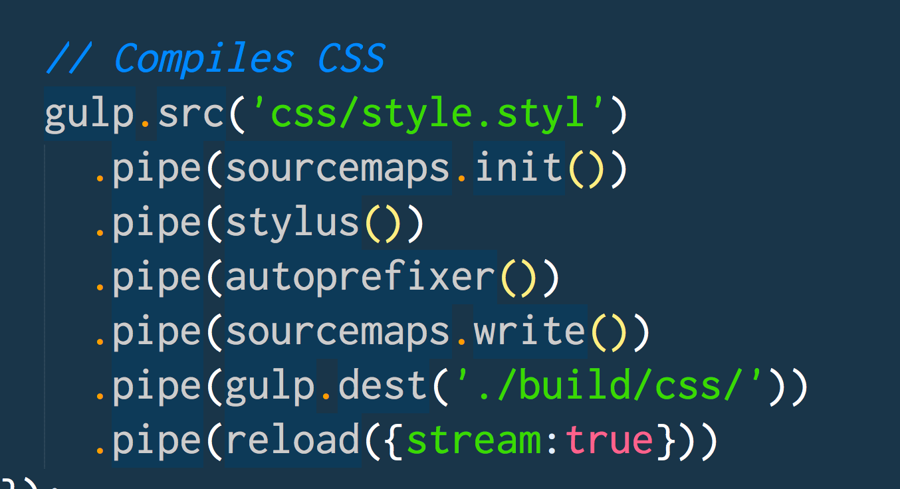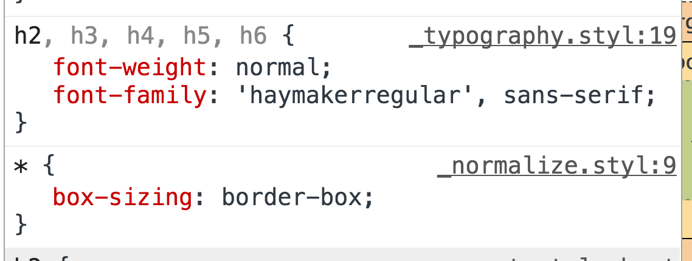😮😮😮
Whew.
That was a lot.
Tooling is important
Put a
build process
in place
Sky is the limit!
Thanks!
@wesbosWesBos.com